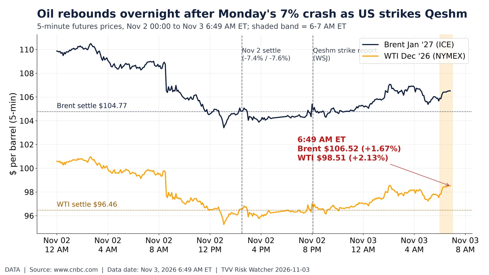
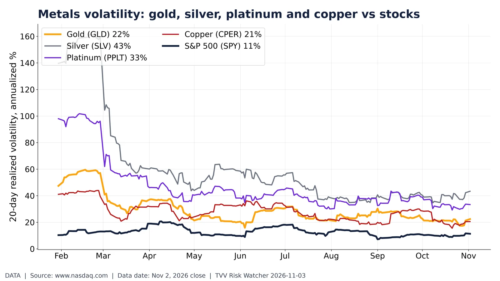

Data-center picks and shovels: power, cooling and DC landlords, 2026. 2026 price change: DC power/cooling suppliers vs data-center REITs and S&P 500. Nasdaq, Nov 2, 2026 close. Source: https://www.nasdaq.com/market-activity/stocks/vrt/historical

Oil rebounds overnight after Monday's 7% crash as US strikes Qeshm. Brent $106.52, WTI $98.51 at 6:49 AM ET, up ~2% after 7% Monday crash. CNBC/Yahoo, Nov 3. Source: https://www.cnbc.com/quotes/@LCO.1
Flu season start: influenza-like illness vs past four seasons. ILI share of outpatient visits vs prior seasons; 2026-27 season starting low. CDC ILINet via Delphi, week 202642. Source: https://api.delphi.cmu.edu/epidata/fluview/?regions=nat

Metals volatility: gold, silver, platinum and copper vs stocks. 20-day realized volatility of metal ETFs vs S&P 500 in 2026. Nasdaq ETF prices, Nov 2, 2026 close. Source: https://www.nasdaq.com/market-activity/etf/gld/historical
Governor battlegrounds: markets favor Democrats in 8 of 9 states. Polymarket governor odds: Democrats favored in 8 of 9 battlegrounds; Kansas leans GOP. Polymarket, Nov 3 7 AM ET. Source: https://polymarket.com/event/arizona-governor-winner-2026
Market verdict on Q3 AI capex: hyperscaler stocks since Oct 27. Hyperscaler, Oracle and Nvidia share moves since Oct 27, spanning Q3 capex reports. Nasdaq, Nov 2, 2026 close. Source: https://www.nasdaq.com/market-activity/stocks/msft/historical